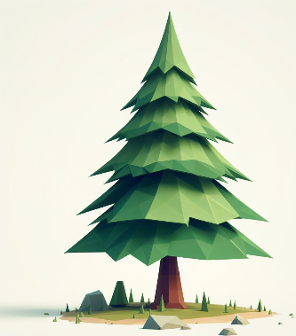
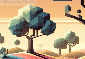
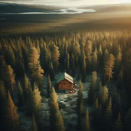

What is Homebound?
Description:
- Stylized low poly
-
 
- Story based exploration game
- Return to roots,escape/healing story
-
Heavily inspired by the game "Among Trees" which has sadly been abandoned by it's devs.
- Takes place in a [boreal forest]
- Surrounded by a foggy and geometric world border
- Mountains inspired by Palmer Alaska will be visible in the distance
Story:
- Focused on the difficult topic of healing from greif.
- Cliche of = It's a dream world
- Rebuild the cabin symbolic of rebuilding hope for the future
- Collecting artifacts and pinning memories to the quark board will add journal entries to the GUI for lore and an easier time to keep track of progress
- Heal from the greif of loosing a Child
- climb the hill and break through the dream wall
Sneak peak / trailer:

This would be a sneak peak into the story, still thinking through this part... wake from floor of a ruined and half collapsed cabbin... explore a bit (aka the tutorial)... do first repair... eventualy do additional repairs... focused on collecting "Artifacts" for the memory board... Not meant to be an intence high action adventure... built to be a chill exploration and collection game... with a bit of story... at the end sneak in a trailer for the second game after the main character breaks through the dream wall.